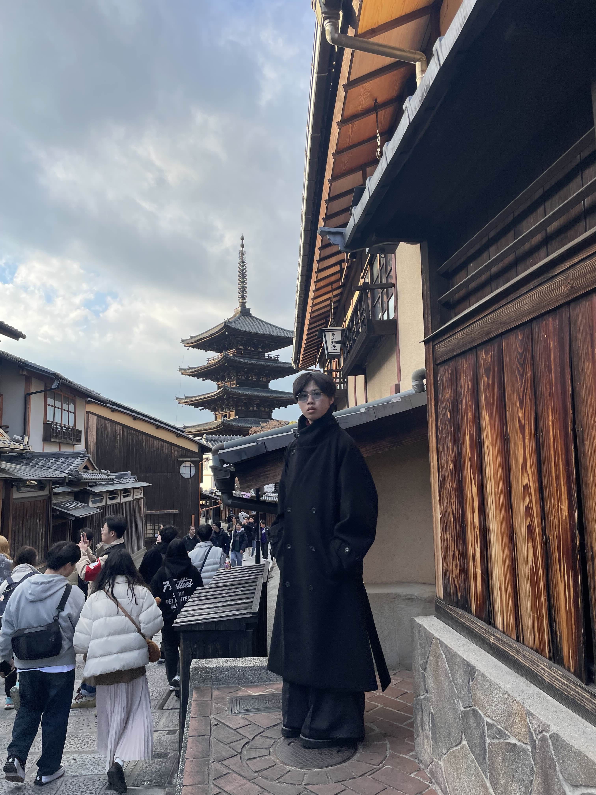

Affiliation: 3rd‑year, Department of Information & Social Sciences, Faculty of Informatics, Shizuoka University
Born: 2004, Ishikawa, Japan
I study informatics with a focus on the mathematical understanding of language and intelligence through statistical, geometric, and information‑theoretic perspectives. My interests include symbol & language emergence, and I value translating theory into social applications.
Research Profiles / Links:
Keywords: Embedding representations, Geometry, Mechanistic interpretability, Symbol emergence
I enjoy deep conversations, great food, and travelling. Learning something new and widening my worldview is my greatest motivation.